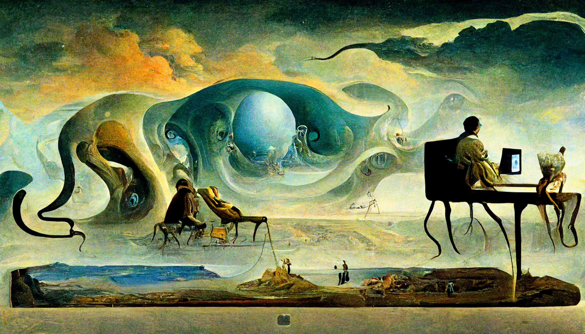
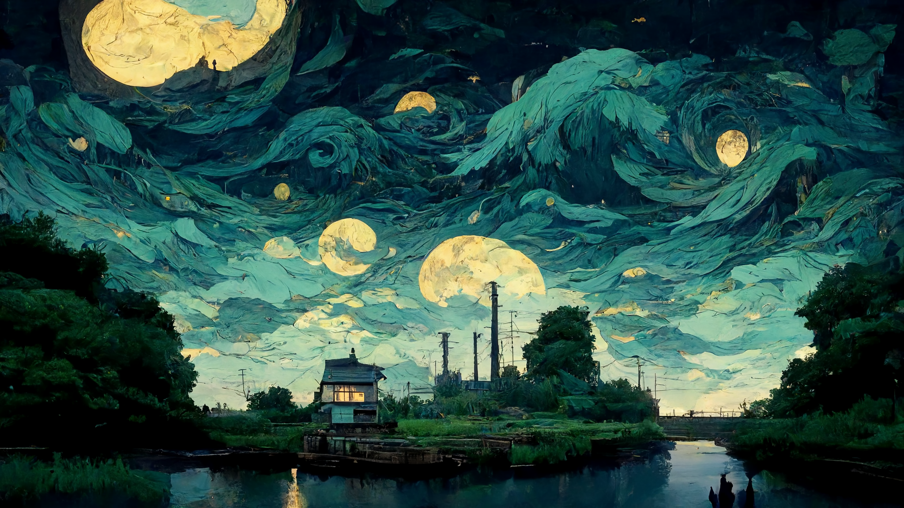
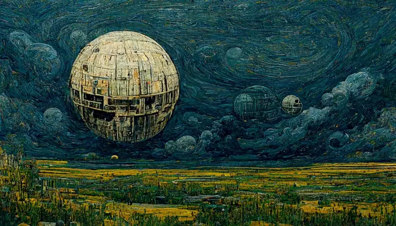
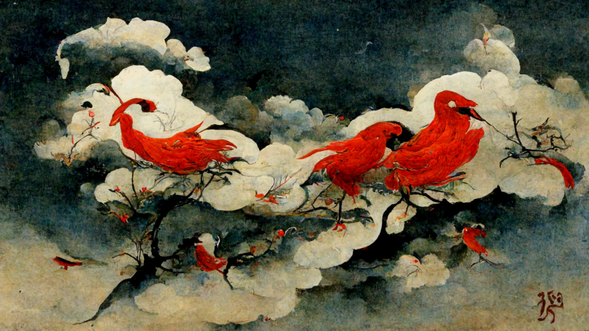
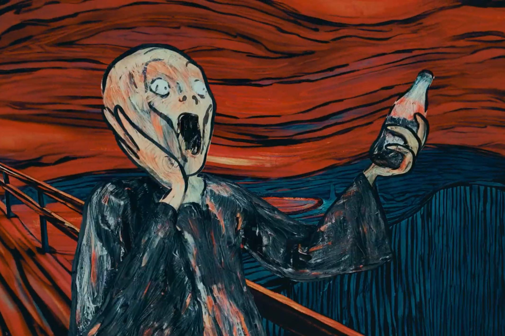
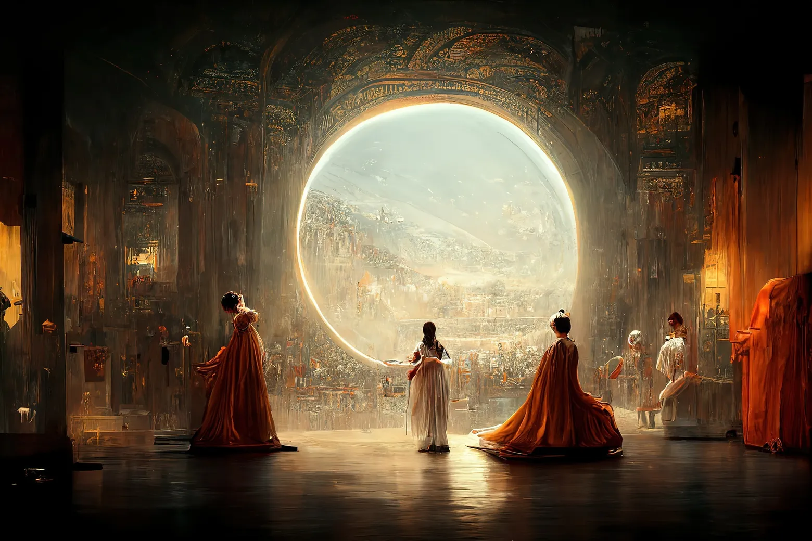

Medo, raiva, fome, estes eram sentimentos cotidianos de nossos antepassados casadore-coletores, que, para aliviar suas mentes, começaram a praticar arte. Os desenhos rupesdres, inalguram a relação do ser humano com a arte, tal relação passou por inúmeros peridos históricos, transformando e sendo transformada a cada mudança de pensamento e tecnologia. Na década de 1940 surgi o instrumento que mais abalaria dada relação, o computadore, que munido de inteligências artificias, se torna um artista incansavel com ideias inesgotaveis, colocando em cheque o papel humano neste relacionamento.
Seguem alguns exemplos de imagens produzidas por inteligências artificiais:
     Estes são alguns sites que produzem tais imagens:
-Picsart -Bing Image Creator -Dream Studio -Leonardo -Playground